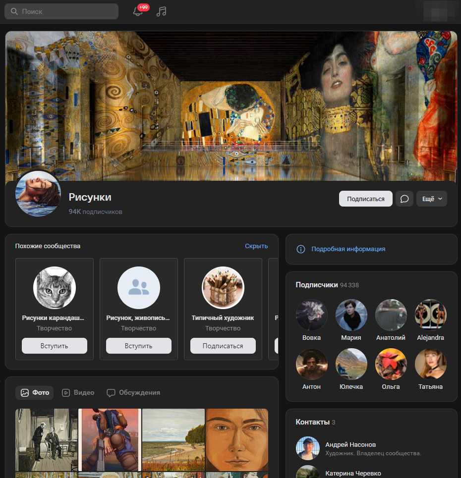
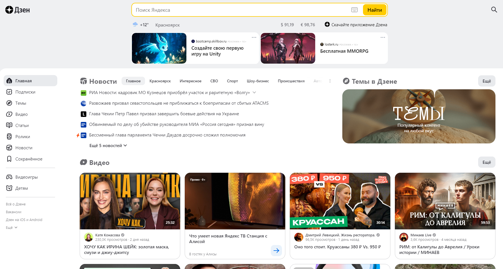
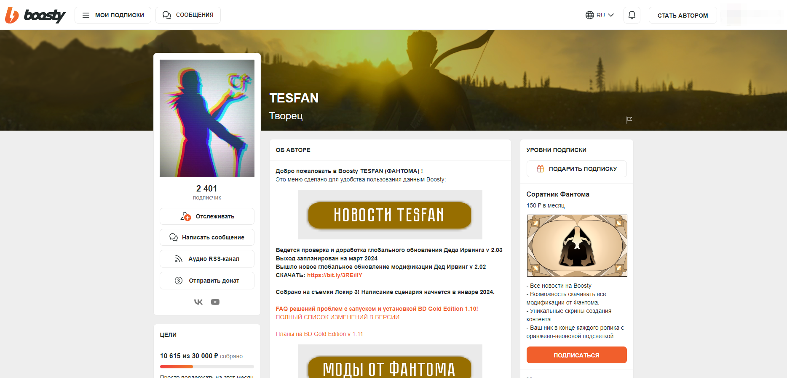

Приветствуем вас на разделе сайта Проект КА!0Б. Здесь вы получите необходимую информацию для получения прибыли в интернете, используя своё творчество, с помощью монетизации!
О монетизации.
Монетизация - это процесс превращения творческого потенциала, контента или искусства в источник дохода. Это может включать в себя продажу произведений, предоставление услуг, связанных с творчеством, или использование творческого контента для привлечения аудитории и монетизации через рекламу или спонсорство.
Плюсы:
–Самореализация: Монетизация творчества позволяет творческим людям реализовывать свой потенциал и получать удовлетворение от своей работы.
–Устойчивость: Монетизация помогает создать устойчивую модель бизнеса. Путем получения дохода от продажи продуктов, услуг или контента компании могут обеспечить себе стабильное финансовое положение.
–Расширение бизнеса: Доход от монетизации может быть использован для расширения бизнеса, запуска новых продуктов или услуг, привлечения новых клиентов и масштабирования текущих операций.
-Пассивный доход: Некоторые виды творческой деятельности, такие как продажа цифровых товаров или получение дохода от рекламы на популярных платформах, могут привести к созданию источника пассивного дохода.
Минусы:
–Нестабильный доход: В зависимости от специфики творческой работы и ее спроса, доход от монетизации творчества может быть нестабильным и непредсказуемым.
–Конкуренция: В творческих отраслях конкуренция часто высока, что может затруднить монетизацию и потребовать значительных усилий для выделения среди конкурентов.
–Трудности в продвижении: Продвижение творческих работ и услуг может быть сложным из-за необходимости привлечения внимания к уникальным аспектам творчества.
–Творческие ограничения: Некоторые творческие проекты могут столкнуться с ограничениями или вмешательством спонсоров или аудитории, что может ограничить творческую свободу.
Лучшие сайты для начала с монетизацией.

ВКонтакте — это крупнейшая социальная сеть в России, которая предлагает разнообразные инструменты для монетизации творчества, включая публичные страницы, музыкальные подписки и интеграцию с VK Pay.
Плюсы:
-Большая аудитория: доступ к миллионам пользователей.
-Мультиформатность: поддержка видео, музыки, текстов и изображений.
-Интеграция с VK Pay: удобный способ приёма платежей.
Минусы:
-Конкуренция: необходимость выделиться среди множества творцов.
-Алгоритмы показа: сложность в прогнозировании охвата публикаций.
-Регуляции: возможные ограничения на контент.

Яндекс.Дзен — это платформа для блогеров и издателей, позволяющая монетизировать контент через встроенную рекламу и партнёрские программы.
Плюсы:
-Персонализация: алгоритмы подбирают аудиторию под ваш контент.
-Инструменты аналитики: понимание поведения аудитории.
-Простота использования: лёгкий старт для новичков.
Минусы:
-Зависимость от алгоритмов: изменения могут снизить доход.
-Ограничения на форматы: не все виды контента поддерживаются.
-Конкуренция с новостными изданиями: борьба за внимание аудитории.

Boosty — это платформа для подписок, которая позволяет творцам получать регулярный доход от своих подписчиков за эксклюзивный контент.
Плюсы:
-Регулярный доход: стабильность благодаря подпискам.
-Гибкость: возможность устанавливать разные уровни подписки.
-Прямое общение с аудиторией: создание сообщества вокруг вашего творчества.
Минусы:
-Необходимость в создании эксклюзивного контента: требует времени и ресурсов.
-Построение аудитории: требуется время для привлечения подписчиков.
-Комиссии платформы: часть дохода уходит на обслуживание платформы.